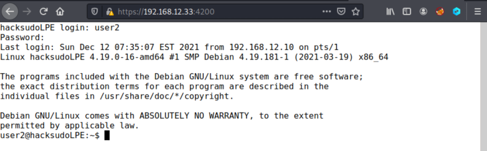
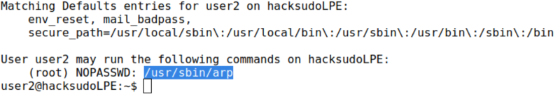

3.2 Trying arp Abusing Challenge
The “arp link” doesn't work. So, we're going to enter as in the previous point but with different credentials.
1. Click on the “Browse Console” button. You'll be redirected to a page like shell. Introduce the credentials “user2” and “hacksudo”.

Now you can type any command.
3. Look for “sudo” permissions.
user2@hacksudoLPE:~$sudo -l
Output:

You can run as “root” the “arp” command.